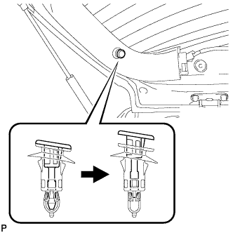
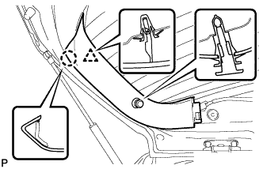
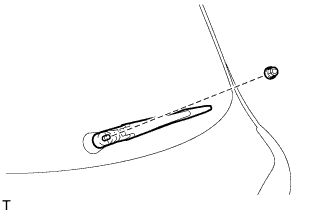
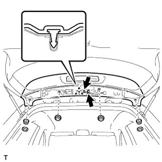
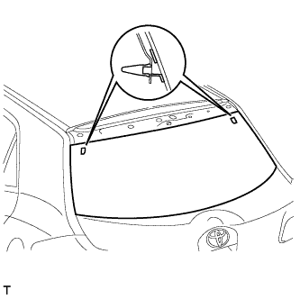
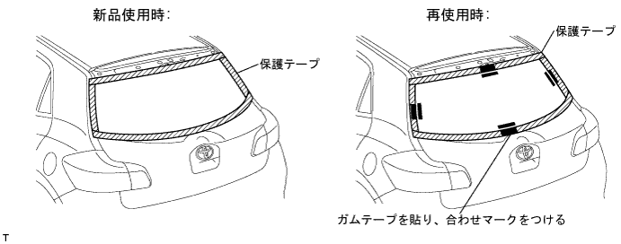
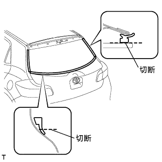
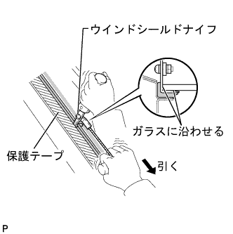
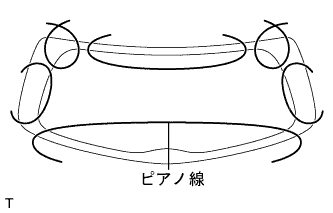

Back Door Glass Removal |
| 1. Remove Back Door Trim Panel Assembly Upper |
 |
Disengage the 4 clips and 4 claws, and remove the back door trim panel assembly upper.
| 2. Remove Back Door Side Garnish LH |
 |
Disengage the pin of the package tray trim garnish hook.
 |
Disengage the clips and claws, and remove the back door side garnish LH together with the package tray trim garnish hook.
 |
Disengage the 2 claws and remove the package tray trim garnish hook.
| 3. Remove Back Door Side Garnish RH |
| 4. Remove Back Door Inside Handle |
 |
Insert a moulding remover at the position shown in the illustration, disengage the 4 claws as shown in the illustration, and remove the back door inside handle.
| 5. Remove Back Door Trim Panel Assembly |
 |
Remove clip (A).
Disengage the 11 clips and remove the back door trim panel assembly.
| 6. Remove Rear Wiper Arm Head Cap |
 |
Remove the rear wiper arm head cap.
| 7. Remove Rear Wiper Arm & Blade Assembly |
 |
Remove the rear wiper arm nut and remove the rear wiper arm & blade assembly.
| 8. Remove Rear Wiper Motor Assembly |
 |
Disconnect the connector.
Remove the 3 bolts and remove the rear wiper motor assembly.
| 9. Remove Rear Wiper Motor Grommet |
 |
Remove the rear wiper motor grommet.
| 10. Remove Rear Spoiler Assembly |
 |
Remove the 2 plug hole covers.
Disconnect the connectors.
Remove the 4 nuts.
Disengage the clips and remove the rear spoiler assembly.
| 11. Remove Back Door Glass |
 |
Disengage the 2 back door window glass spacers.
Apply protective tape to the body surface around the back door glass.

Remove the back window moulding outside.
 |
Using a utility knife, cut the back window moulding outside and back window moulding LWR.
 |
Disconnect the 2 connectors from the back door glass.
Attach suction cups to the back door glass.
 |
When using a windshield knife.
Apply plenty of soapy water to the glass bonded area.
Insert the windshield knife into the bonded area.
While keeping the blade at a right angle to the edge of the glass and matching the blade of the windshield knife to the glass surface and edge, pull it parallel to the edge of the glass to cut the adhesive.
 |
When using piano wire
Pass piano wire (0.6mm is suitable) through as shown in the illustration, and attach both ends to a mighty puller.
Pull the piano wire alternately to cut the adhesive, leaving the clips.
Holding the suction cups, disengage the 4 back door glass spacers and remove the back door glass.
| 12. Remove Back Door Glass Spacer |
Using a scraper, remove the back door glass spacer. (When reusing back door glass)
| 13. Remove Back Window Glass Spacer NO.2 |
Using a scraper, remove back window glass spacer No.2. (When reusing back door glass)
| 14. Remove Back Window Glass Spacer NO.1 |
Using a scraper, remove back door window glass spacer, NO.1. (When reusing back door glass)